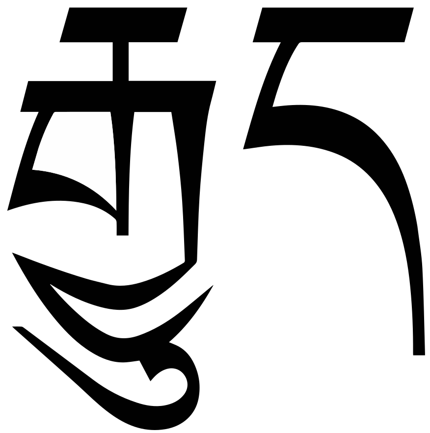
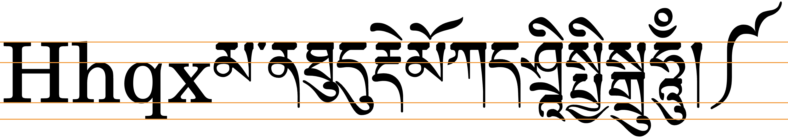

This page brings together basic information about the Tibetan script and its use for the Tibetan language. It aims to provide a brief, descriptive summary of the modern, printed orthography and typographic features, and to advise how to write Tibetan using Unicode. The main focus is the Standard Tibetan used in Lhasa, but some information is also provided about use of the script for Sanskrit.
The Tibetan script is used for writing the Tibetan, Dzongkha, Ladakhi and Sikkimese languages, spoken in Tibet, Bhutan, Nepal and India. It is also used for transcribing religious Sanskrit texts. Language speakers number around 6,000,000.
བོད་སྐད
ལྷ་སའི་སྐད་
While the exact origin of the script is not clear (other than that is a derivative of the Brahmi script), tradition says that it was developed by Thonmi Sambhota after a visit to India in the mid-7th century to study the art of writing.
The creation of the Tibetan alphabet is attributed to Thonmi Sambhota of the mid-7th century. Tradition holds that Thonmi Sambhota, a minister of Songtsen Gampo (569-649), was sent to India to study the art of writing, and upon his return introduced the alphabet. The form of the letters is based on an Indic alphabet of that period.
The Tibetan script is an abugida, ie. each consonant contains an inherent vowel sound. See the table to the right for a brief overview of features for the modern Tibetan orthography.
Tibetan can be written using two different styles: དབུ་ཅནdbu canwith a head, the block style of the Tibetan script used in print, pronounced u.cen; and དབུ་མེདdbu medheadless, the cursive style of the Tibetan script used in shorthand and calligraphy, pronounced u.me. This page concentrates on the former. Pronunciations are based on the central, Lhasa dialect.
Historically, Tibetan text was written on loose-leaf sheets called pechas, (དཔེ་ཆ). Some of the characters used and formatting approaches are different in books and pechas.
Tibetan text runs left to right in horizontal lines. Word boundaries are not indicated. However, Tibetan words are made up of one or more units called tsheg-bar which are roughly equivalent to phonological syllables. The tsheg-bar units are separated using ་ (tsheg). Line breaks occur after the tsheg, and never inside a tsheg-bar, and it is preferable to avoid breaking a line in the middle of the word.
The tsheg-bar units are composed of structural elements that include a root surrounded by vowel signs and consonants used as prefixes, subscripts, superscripts, suffixes, and secondary suffixes. A common scenario includes a stack and additional consonants to either side of the root consonant. These may indicate syllable-final consonant sounds, but more often than not they qualify or modify the root value, and are not associated with their nominal sound value. The actual pronunciation of Tibetan is usually much more simple than a typical romanisation would suggest. For example, the word བཀོད is transcribed as bkod.

A syllable with an initial stack of three consonants plus a vowel sign. followed by a suffix consonant (to the right).show composition
རྒྱུད
To write the sounds of the standard Lhasa dialect, Tibetan uses 28 consonant letters (plus 30 subjoined forms). Tibetan has 3 different code points for each of the stop and affricate sounds, to reflect combinations of tone and voicing. Two of the fricatives also have separate code points to indicate high and low tones. 6 more letters are used to write Sanskrit.
A distinguishing feature of Tibetan is the set of separate code points for subjoined consonants, used to create consonant stacks. Of the 77 combining characters in the Tibetan block, 48 represent subjoined consonant forms. Unlike many other Indic scripts, the modern Tibetan orthography doesn't use a virama to create stacks.
Tibetan is an abugida with one inherent vowel, pronounced a. When writing the Lhasa dialect, other post-consonant vowels are represented using 4 vowel signs, all combining marks.
There are no pre-base, circumgraph, or multipart vowels in the Tibetan used to write the Llasa dialect (though there are when writing in Sanskrit).
Sanskrit vowels written in Tibetan use additional vowel signs and combining marks, some of which represent diphthongs, and some of which form circumgraphs or multipart characters, depending on the encoding.
Tone is not explicitly indicated in the orthography.
Modern Tibetan writing uses few punctuation marks or symbols, but the Tibetan script block in Unicode contains many of these.
These sounds are for the modern Lhasa dialect of Tibetan.
Click on the sounds to reveal locations in this document where they are mentioned.
Phones in a lighter colour are non-native or allophones. Source Wikipedia.
Vowel sounds
Plain vowels
Complex vowels
ɑiɑu
Consonant sounds
labial
dental
alveolar
post-
alveolar
retroflex
palatal
velar
glottal
stops
p
t
ʈ
c
k
ʔ
aspirated
pʰ
tʰ
ʈʰ
cʰ
kʰ
affricates
t͡s
t͡ɕ
ʈ͡ʂ
aspirated
t͡sʰ
t͡ɕʰ
ʈ͡ʂʰ
fricatives
s
ʂ
ɕ
h
nasals
m
n
ɲ
ŋ
approximants
w
lɹ
ɹ̥l̥
jʎ
Tibetan vowels
Vowel summary table
The following table summarises the main vowel to character assigments.
ⓘ represents the inherent vowel.
Vowel signs:
ི␣ུ
འི␣འུ␣␣ཨི␣ཨུ
ེ␣ོ
འེ␣འོ␣␣ཨེ␣ཨོ
ⓘ
འ␣ཨ
Inherent vowel
ཀ
kaU+0F40 TIBETAN LETTER KA
a following a consonant is not written, but is seen as an inherent part of the consonant letter, so ka is written by simply using the consonant letter.
Combining marks used for vowels
ཀི
kiU+0F40 TIBETAN LETTER KA + U+0F72 TIBETAN VOWEL SIGN I
Standard Tibetan has only 5 vowels, including the inherent vowel, and so only 4 vowel signs.
ི␣ུ␣ེ␣ོ
None of the vowel signs are spacing marks, ie. they don't consume horizontal space when added to a base consonant.
An orthography that uses vowel signs is different from one that uses simple diacritics or letters for vowels in that the vowel signs are generally displayed relative to the orthographic syllable, rather than just applied to the letter of the immediately preceding consonant. This means that vowel signs that appear above a base appear above a whole consonant cluster if the cluster is rendered as a stack.
Vowel sign position relative to a stack of consonants.show composition
སྤྱིར་
Standalone vowels
0F60 (called
འ་ཆུང་à␣ʧʰuŋ␣'a chung)
and 0F68 (called
ཨ་ཆེན་ạ␣ʧʰen␣a chen)
represent the phoneme a. In the Lhasa dialect, they have a low and a high tone, respectively.
Other standalone vowels are written by attaching vowel signs to one or other of these, depending on the tone needed.
འི␣ཨི␣འུ␣ཨུ␣ ␣འེ␣ཨེ␣འོ␣ཨོ␣ ␣འ␣ཨ
Other uses of A-chung
འྰ␣ཨྸ
Nasals
'A-chung can also represent a nasal, so the following alternative spellings may occur.
མཚམས་ or འཚམས་mtshamsboundary
མཐུན་ or འཐུན་mtʰunagreement
'A-chung may also nasalise the juncture of two morphemes, eg.
དགེ་འདུན་
Dipthongs
Other than loanwords, Tibetan only allows diphthongs in diminutive expressions. 'A-chung is used to write these, as in the following:
མི་མེའུ་
Another example:
རྡོ་རྡེའུ་
Inherent vowel locator
Finally, 'a-chung can be used to disambiguate the location of an inherent vowel in a syllable. The following sequence is interpreted as CVC.
དག་
To express CCV add 'a-chung, eg.
དགའ་
Vowel length
ཱ
A subjoined 'a-chung is used to express long vowels in loan words (Tibetan doesn't have them natively), such as those borrowed from Chinese, Hindi and Mongolian. For example,
ཤྲཱི་
ཡང་ལཱ
ཏཱ་ལའི་བླ་མ
The Unicode Standard recommends the use of 0F71 for this, rather than 0FB0.
U+0FB0 TIBETAN SUBJOINED LETTER -A ( a-chung ) should be used only in the very rare cases where a full-sized subjoined a-chung letter is required. The small vowel lengthening a-chung encoded as U+0F71 TIBETAN VOWEL SIGN AA is far more frequently used in Tibetan text, and it is therefore recommended that implementations treat this character (rather than U+0FB0) as the normal subjoined a-chung.
Consonants with no following vowel
The inherent vowel is not normally pronounced at the end of a word.
Word-internally, consonants with no intervening vowel are stacked (see clusters).
Sanskrit vowels
This section examines additional vowel signs used for transcription of Sanskrit text or foreign words, principally from Chinese and Mongolian.
Sanskrit extensions add vowels that involve more than one glyph per base. In 2 cases these glyphs are positioned both above and below the base or stack.
A circumgraph: the 2 glyphs needed to write the vowel sound iː appear above and below the base.show composition
ཤྲཱི་
The Unicode Tibetan block provides precomposed characters for each of these vowels, but discourages their use.
ཱི␣ཱྀ␣ཱུ
Instead, the Standard recommends the use of decomposed sequences as follows. The decomposed sequence is produced after normalisation by both NFC and NFD methods
ཱི␣ཱྀ␣ཱུ
Whichever approach is used, the vowel signs must be typed and stored after the consonant characters they surround. In the case of decomposed vowel signs, the order is also important and must be as shown above.
Other vowel signs
In addition to the vowel signs just mentioned, the following combining marks are used to indicate additional vowel sounds for the Sanskrit repertoire.
The following table summarises the main consonant to character assigments.
The left column is the basic letter, and the right has subjoined forms. This table doesn't include letters used for writing Sanskrit, however, there are other Tibetan letters that should probably appear here, given some further research.
Stops
པ␣ཏ␣ཅ␣ཀ
ྤ␣ྟ␣ྐ
ཕ␣ཐ␣ཆ␣ཁ
ྥ␣ྠ␣ྑ
བ␣ད␣ཇ␣ག
ྦ␣ྡ␣ྒ
ཊ␣ཋ␣ཌ
ྚ␣ྛ␣ྜ
Affricates
ཙ␣ཚ␣ཛ
ྩ␣ྫ␣ྕ␣ྗ␣␣ྪ␣ྖ
Fricatives
ས␣ཟ␣ཤ␣ཞ␣ཧ␣ ␣ཥ
ྶ␣ྯ␣ྴ␣ྮ␣ྷ␣ ␣ྵ
Nasals
མ␣ན␣ཉ␣ང␣ ␣ཎ
ྨ␣ྣ␣ྙ␣ྔ␣ ␣ྞ
Other
ཝ␣ར␣ལ␣ཡ
ྭ␣ྺ␣ྲ␣ླ␣ྱ␣ྻ
Basic consonants
Native Tibetan words use 28 full-sized consonant letters and 30 subjoined consonant letters. Tibetan has distinct stop and affricate letters for consonants that are high tone and unaspirated, high tone and aspirated, and low tone and aspirated. The sound values of these are modified, however, by the other characters within a written syllable. The sound matrix provides a useful framework for understanding these effects, and the various modifications are described in the sections that follow.
The lists below show a basic and a subjoined version of each consonant, however not all subjoined forms are used for writing the Tibetan language. Whereas the table just above takes you from sounds to letters, the following simply lists the basic consonant letters.
The following diagram shows characters in all of the syllabic positions, and lists the consonant characters that can appear in each of the non-root locations.
Parts of a Tibetan syllable.show composition
འགྲེམས་སྟོན་
Sound matrix
Nineteen of the consonants are typically arranged in 4x5 matrix form that is useful for understanding pronunciation, and particularly for the effects of non-root consonants on the syllable.
ཀ␣ཁ␣ག␣ངཅ␣ཆ␣ཇ␣ཉཏ␣ཐ␣ད␣ནཔ␣ཕ␣བ␣མཙ␣ཚ␣ཛ
The arrangement of columns is as follows:
Column 1: unaspirated & high tone.
Column 2: aspirated & high tone.
Column 3: aspirated & low tone.
Column 4: nasals, all low tone.
Consonant stacking
A stack has a consonant character at the top (although it may actually be slightly squeezed or adapted slightly in shape), and one or more special subjoined consonant characters beneath it.
The topmost consonant in a stack always uses the standard character from the Unicode Tibetan block regardless of whether it is a root consonant or not, and consonants below it always use a character from the subjoined range.
fig_stack shows an example from the Unicode Standard of a word which shows a stack with three consonants. Click on the image or 'show composition' to see the components and the order in which they are stored.
A word containing a stack of 3 consonants and a vowel sign.show composition
སྤྱིར་
Unlike other Brahmi-derived scripts, no virama is used for native Tibetan text. Instead, just a full and subjoined form of each consonant. The subjoined forms are combining characters. Avoiding the virama makes sense because the virama is not used by Tibetans, and the approach taken makes it easier to create the large number of stacks contained in Tibetan text.
Tibetan uses the word 'head' to refer to either the top-most consonant (ie. spacially) or the root consonant of a syllable, which may be a subjoined consonant. We therefore avoid this term here, and say 'root' or 'topmost'.
The following list shows the order in which characters should be typed, and stored in memory, for a set of stacked characters.
Standard consonant shape
First subjoined consonant
Any other subjoined consonants, in order of descent
Subjoined vowel 'a-chung
Standard or compound vowel sign, or virama (for transliterations)
In transliterated text consonants are sometimes stacked in ways that are not allowed in native Tibetan text.
The root consonant
The pronunciation of Tibetan syllables is typically much simpler than the orthography, which involves patterns of consonants that reduce ambiguity and can affect pronunciation and tone.
The primary consonant in a tseg-bar is called the root consonant or radical (མིང་བཞི), and the other consonants in the syllable (normally up to a maximum of 6) annotate or modify it. The following rules help identify the root:
a consonant with a vowel is always the root, unless it is the phrase connector འི, and letters with superscripts or subscripts are root consonants.
གཡུ་མདོག júm.tôː turquoise
དཔྱ་ཁྲལ t͡ɕá.ʈ͡ʂʰɛː tribute
in a 2-consonant syllable with no vowel, the first consonant is always the root
ནང naŋ inside, room
in a 3-consonant syllable where the last consonant is not ས, the second consonant is likely to be the root.
དམག maː˥˩ war
in a 4-consonant syllable, the second consonant is always the root.
གཟིགས si᷈ to see, look (hon.)
Prefixes
ག␣ད␣བ␣མ␣འ
The 5 characters that appear in the prefix location are not pronounced, but may de-aspirate or give a higher tone value to certain root characters. Each superscript character can only be used with a specified set of root characters.
The effect varies according to the position of the character in the matrix described earlier: column 1 characters
(ཀཅཏཔཙ)
are unaffected, pronunciation-wise, and prefixes serve to distinguish similar sounding words;
column 2 characters
(ཁཆཐཕཚ)
only infrequently have prefixes, and pronunciation is also unaffected;
column 3 letters
(གཇདབཛ)
are de-aspirated and voiced (but still low tone);
column 4 letters and ཡ(ངཉནམཡ)
are given a high tone.
The consonant 0F42 may occur before 11 root characters, 0F51 before 6, 0F56 before 10, 0F58 before 11, and 0F60 before 10, eg. འཁོར་ལོ་བསད་
The prefix letters མ and འ also introduce prenasalisation of column 3 letters in Old Tibetan pronunciation. The nasal sound is homorganic with the following consonant.
Superscripts
ར␣ལ␣ས
The three characters that appear in the superscript location raise the tone pitch of the syllable, but are not pronounced themselves. Each superscript character can only be used with a specified set of root characters. The effect varies according to the position of the character in the matrix described earlier: column 1 characters are unaffected; column 2 characters don't have superscripts; column 3 letters are de-aspirated and voiced (but still low tone); column 4 letters receive a high tone.
—
ར
ལ
ས
ཀ␣ཁ␣ག␣ང
རྐ␣རྒ␣རྔ
ལྐ␣ལྒ␣ལྔ
སྐ␣སྒ␣སྔ
ཅ␣ཆ␣ཇ␣ཉ
␣རྗ␣རྙ
ལྕ␣ལྗ␣
␣ ␣སྙ
ཏ␣ཐ␣ད␣ན
རྟ␣རྡ␣རྣ
ལྟ␣ལྡ
སྟ␣སྡ␣སྣ
པ␣ཕ␣བ␣མ
␣རྦ␣རྨ
ལྤ␣ལྦ
སྤ␣སྦ␣སྨ
ཙ␣ཚ␣ཛ
རྩ␣རྫ
སྩ
ལ
ལྷ
Gaps and empty cells indicate that the combination doesn't occur in the Tibetan orthography we are describing.
ལྷ produces the heavily aspirated sound ʰlá.
ར has a shape slightly different from its nominal shape in all combinations except རྙ and རླ.
You should always use the normal RA character for the superscript. The font will adjust the shape where needed.
Subscripts
ྱ␣ྲ␣ླ␣ྭ
The four characters that can appear in the subscript location are also each combined with a particular subset of root characters and have different effects. The table below shows the resulting sounds.
Note that three of the subscripts have shapes that are significantly different from the nominal shape of the character they represent.
—
ྱ
ྲ
ླ
ྭ
ཀ␣ཁ␣ག␣ང
ཀྱ␣ཁྱ␣གྱ
ཀྲ␣ཁྲ␣གྲ
ཀླ␣ ␣གླ
ཀྭ␣ཁྭ␣གྭ
ཅ␣ཆ␣ཇ␣ཉ
␣ ␣ ␣ཉྭ
ཏ␣ཐ␣ད␣ན
ཏྲ␣ཐྲ␣དྲ
␣ ␣དྭ
པ␣ཕ␣བ␣མ
པྱ␣ཕྱ␣བྱ␣མྱ
པྲ␣ཕྲ␣བྲ␣མྲ
བླ
ཙ␣ཚ␣ཛ
ཙྭ␣ཚྭ
ས␣ཟ␣ཤ␣ཞ␣ཧ
སྲ␣ ␣ ␣ཧྲ
སླ␣ཟླ
␣ཟྭ␣ཤྭ␣ཞྭ␣ཧྭ
ར␣ལ
རླ
རྭ␣ལྭ
Gaps and empty cells indicate that the combination doesn't occur in the Tibetan orthography we are describing.
0FB1 functions as a medial -j- after k(ʰ). When combined with bilabial consonants, however, the pronunciation is mapped to the set of palatal consonants.
ྲ mostly produces retroflex ʈ(ʰ).
ླ, with one exception, produces l. ཟླ produces ta or ⁿda.
ྭ doesn't affect the pronunciation, but may be used to indicate which is the root consonant when there is a prefix and second suffix but no vowel sign.
Uniquely, ྭ can also appear as a sub-subscript, as in the following word which is transcribed grwa pa.
གྲྭ་པ
Suffixes
བ␣ད␣ག␣ས␣མ␣ན␣ང␣ར␣ལ␣འ
Characters in the suffix position have one of the following effects:
ག ང བ མ ར add their own sound, eg.
དག་
ད ས modify the root's vowel value to a short vowel and change the consonant to a following glottal stop in these cases: a→ɛ, u→y, o→ø. For i and e the consonant is silent but the vowel is long, eg.
བསད་
ཆོས
ན ལ do both of the above, eg.
བདུན་
འ is silent, and serves to disambiguate the spelling (see achung_inherent), unless it has a vowel sign attached (for example, see achung_diphthong), eg. compare the following with the example in point 1 above:
དགའ་
Secondary suffixes
ས␣ད
Only two characters can appear in the secondary suffix location, according to Tibetan grammar, 0F66 and 0F51, and the latter is no longer officially found in modern Tibetan. A character in this position adds no sound and nor does it affect the sounds in the rest of the syllable, eg. བསྒྲུབས་གྱུརད་
Irregular pronunciations
Most consonants translate to the same basic sound unless they are modified by surrounding letters as mentioned above. In some cases, however, the pronunciation of a consonant is irregular. In particular, b is sometimes pronounced w, eg.
རེ་བ་
དབང་ཆ་
When it has an u vowel and this transformation applies, the sound becomes simply u, eg.
དབུ་མེད
And some words have an additional nasalisation which is not shown, eg.
ད་ལྟ་
Consonant length
Tibetan doesn't have any special mechanisms to represent geminated or lengthened consonant sounds.
Repertoire extension
Many of the extra consonants (and other characters) in the Uncode Tibetan script block are used for transliteration of other languages, principally Sanskrit and Chinese. These include the retroflex and voiced aspirated consonants. A couple of characters are extensions for Balti.
Retroflex consonants
ཊ␣ཋ␣ཌ␣ཎ␣ཥྚ␣ྛ␣ྜ␣ྞ␣ྵ
The retroflex consonants, which are reversed versions of Tibetan consonant shapes, may be used in modern Tibetan to distinguish loan words from sequences of Tibetan syllables. For example,
ཁ་ཎ་ཌ
མོ་ཊ
Aspirated consonants
Consonant stacks are normally used to represent aspirated sounds and the Sanskrit diphone kʃ.
གྷ␣ཌྷ␣དྷ␣བྷ␣ཛྷ␣ཀྵྒྷ␣ྜྷ␣ྡྷ␣ྦྷ␣ྫྷ␣ྐྵ
A set of precomposed characters exists for representing these sounds, but they are decomposed under both Unicode normalisation forms, so using the decomposed stacks is likely to make the text more consistent.
གྷ␣ཌྷ␣དྷ␣བྷ␣ཛྷ␣ཀྵྒྷ␣ྜྷ␣ྡྷ␣ྦྷ␣ྫྷ␣ྐྵ
The bottom line here is that aspirated consonants are normally written by simply adding a subjoined HA below a consonant, and the diphone kʃ is produced in a similar way.
Fixed form letters
ཪ␣ྼ␣ྺ␣ྻ
0F62 at the top of a stack usually has a reduced form, eg. རྐrka. For transliterations it is sometimes desirable to retain the full form of RA where in Tibetan words it would be reduced. To do this use 0F6A instead of the normal RA, but only where the normal RA would not produce the full form anyway, ie. do not use eg.
རྙrnya,
which has the full form already.
There are also fixed form variants of subjoined YA and WA.
Other Sanskrit characters
ཿ␣ཾ␣ྃ␣྄␣྅
0F7F ( nam chay ) is the visarga, and 0F7E ( ngaro ) is the anusvara.
Tsa-'phru mark
0F39 is an integral part of the three consonants 0F59, 0F5A, and 0F5B. Although those consonants are not decomposable, this mark has been abstracted and may be used in combinations such as ཕ༹ or with other consonants to make new letters for use in transliteration and transcription of other languages. For example, in modern literary Tibetan, it is one of the ways used to transcribe the Chinese “fa” and “va” sounds not represented by the normal Tibetan consonants.
Also used to represent tsa, tsha, and dza in abbreviations.
This code point should be used immediately after the consonant it modifies, even if that consonant is followed by a subjoined consonant.
Balti
Two characters are provided for use with Balti.
ཫ␣ཬ
Other features
Sanskrit vocalics
Tibetan vocalics are used only for transcription of Sanskrit.
As for the vowels described earlier, there are deprecated precomposed characters, and equivalent decomposed sequences. The precomposed characters are all circumgraphs, and the decomposed sequences are all multipart vowels.
These are the precomposed code points. The R and L vowels are decomposed in NFC, but the RR and LL vowel code points are not, nor do they decompose in NFD.
ྲྀ␣ླྀ␣ཷ␣ཹ
The Unicode Standard discourages the use of the above precomposed forms (strongly discouraging the last two), and recommends the following sequences instead.
ྲྀ␣ླྀ␣ྲཱྀ␣ཱླྀ
Other letters
The Unicode Tibetan block contains the following additional characters with the general property of letter.
ༀྈ␣ྉ␣ྊ␣ྋ␣ྌ
Numbers
Tibetan has its own set of numbers.
Observation: My Chinese publication, however, uses european digits.
༠␣༡␣༢␣༣␣༤␣༥␣༦␣༧␣༨␣༩
0F3E and 0F3F are paired characters used in combination with digits.
Half-numbers
By some interpretations, the following shapes each have the value of 0.5 less than the number within which it appears. Used only in some traditional contexts, they appear as the last digit of a multidigit number, eg. ༤༬ represents 42.5. These are very rarely used, however, and other uses have been postulated. For more information see Numbers that Don't Add Up : Tibetan Half Digits, by Andrew West.
༳␣༪␣༫␣༬␣༭␣༮␣༯␣༰␣༱␣༲
Text direction
Tibetan text normally runs left to right in horizontal lines.
Occasionally, Tibetan text may occur in vertically-set text. In this case, syllables are kept together as an unbreakable unit.
Tibetan syllables that are not broken in vertically-set text.
Glyph shaping & positioning
You can experiment with examples using the Tibetan picker.
Context-based shaping & positioning
Tibetan requires many rules to position glyphs correctly, and also to shape characters according to context.
Glyphs in Tibetan script need to be adapted sometimes to suit the context in which the character is used. A particularly prevalent example is that of the letter ར[U+0F62 TIBETAN LETTER RA]. When used at the top of a stack it has an abbreviated form, as shown by the highlight in fig_ra_position on the left.
The example on the right in fig_ra_position shows what a normal RA looks like. This is the same underlying character. The shape is determined by rules in the font.
Different renderings of the letter ra.show composition
རྐང་པ
show composition
རང
Combining characters need to be placed in different positions, according to the context. fig_tibetan_position shows the same vowel sign displayed at different heights, according to what stacks above it.
Vowel marks at different heights.show composition
གྲུ་གསུམ
Letterform slopes, weights, & italics
Tibetan writing never had bold or italic effects until the Chinese introduced bold style for books after the invasion of Tibet.dt,34
Duff describes some Western publications that slant Tibetan text in books, but points out that a more natural slant direction for Tibetan would be the opposite to that of Western italics.dt,34
Graphemes
Grapheme clusters
tbd
Punctuation & inline features
Word & syllable boundaries
Word boundaries are not indicated by the Tibetan orthography. However, phonetic syllables, represented by a sequence of letters known as a tsheg-bartsheg bar, are separated by 0F0B.
The tsheg in use to separate the component tsheg-bar units within a single word.show composition
གློག་བརྙན་ཁང
This figure shows the use of the tsheg-bar across a whole sentence. There is no indication of word boundaries.
0F11 after a single syllable wrapped to a new line.
0020
topic
0F0D 0020 0F0D
0F0E
0F0D after 0F40 or 0F42
other
0F08
0FBE
head marks
0F04
0F05
Sections & topics
Key divisions of the text include expressions (brjod-pa) and topics (don-tshan). They do not necessarily equate to English phrases, sentences and paragraphs.
Sections normally end with 0F0D (called shad but pronounced ʃe) followed by a space. Topics (eg. headlines, verses, and longer paragraphs) are often terminated with a double shad or separated with shad+space+shad.
A phrase that ends with the root consonant 0F40 or 0F42 will normally swallow up the shad that immediately follows it, even if there is a vowel sign. For example, where you might expect to see a double shad, you might see ཀུ ། and སྐུ །. However, the shad is not omitted if these characters have a subscript, eg. གྲུ། །.
When a phrase ends with shad+space+shad the space between the shad marks is normally reduced in Tibetan pechas, down to 1/4 or 1/3 of the normal width, or made to fit the space available. Some space is retained to avoid the appearance of a double-shad.dt,39
Boundaries between chapters or significant sections may also be represented by a double-shad followed by 5-6 spaces and another double-shad.dt,38
Double shads separated by several spaces between chapters or significant sections.
0F0E can be used for the double-shad.
Observation: In a Chinese magazine publication I have, most articles contain no double shad as a delimiter. (The text is formatted in paragraphs.) I did find a double shad at the very end of one of the articles, and it was used at the end of each line on a page containing some verse-formatted folk literature. The same appears to apply for large parts of the Bhutanese newspapers I have, however there are other pages with plenty of double shads - some at the end of paragraphs, some inside paragraphs.
0F08 is used to separate texts that are equivalent to topics and subtopics, such as the start of a smaller text, the start of a prayer, a chapter boundary, or to mark the beginning and end of insertions into text in pechas.
This drul-shad is usually surrounded on both sides by the equivalent of about three non-breaking spaces (though no rule is specified).dt,35 The drul-shad should not appear at the beginning of a new line and the whole structure of spacing-plus-shad needs to be kept together.
Examples of tsheg not being used before shad, and of U+0F0C being used between NGA and shad.
So that line-breaking keeps the NGA + tsheg + shad together, 0F0C should be used between NGA and a shad. This is a non-breaking version of the tsheg (the word 'delimiter' in the name is a misnomer).
Example of TSEG BSTAR being used between NGA and shad.
White space
Space is used as a punctuation mark in Tibetan, to separate meaning in sections. It should not appear at the start of a line.dt,37
Spaces in Tibetan text are usually wider than spaces in English text, and typically only occur after one of the following:
0F0D
༑
0F14
0F7F
However, numbers and embedded Western text are surrounded by smaller spaces, eg.
ལོ་ ༢༠༠༡ ཤིང་བྱ་ཟླ་ ༩ ཚེས་ ༥ ཉིན་
So that line-breaks work correctly, 00A0 should be used for spaces when they appear after 0F40 or 0F42, or between 2 shad or double-shad characters. It should also be used for spacing around 0F08.
Except for special situations, such as the use of sbrul shad, it is recommended to use a single space where gaps appear, and to stretch that space where necessary.dt,35
Head marks
In traditional, loose-leaf Tibetan pechas a head mark or yig-mgo (yig go) is used at the beginning of the front of the folio so that you can tell which is the front.
Head marks are also used in both pechas and books to indicate the start of a headline or the start of the first paragraph in a longer text.
fig_head_marks shows a common head mark, 0F04, and the extension character 0F05. A head mark can be written alone, or can be followed by as many as three closing marks; head marks are also followed by two shads.
༄༅༎ ཡོངས་ཁྱབ་གསལ་བསྒྲགས་འགྲོ་བ་མིའི་ཐོབ་ཐང༌།
Example of use of head marks at the start of the Universal Declaration of Human Rights.
Head marks differ from text to text. The Unicode Standard provides a number of characters to give some basic coverage, but may not meet all needs.
Three less common head marks, used in Nyingmapa and Bonpo literature, are also represented in the Tibetan block, namely:
0F01 0F02 0F03
Bracketed text
༼␣༽
Tibetan commonly uses native marks to insert parenthetical information into text.
If entered as a combining character it can be added after the vowel sign in a stack. But the use of this mark is not straightforward, since it attaches to a syllable rather than a character and therefore to place it correctly the application needs to take syllable boundary positions into account. If the syllable has an even number of stacks/consonants, the diacritic will be displayed between the 2 in the middle, not underneath a particular consonant/stack.
Application software has to ignore this character for text processing, such as search and collation.
Alternative methods of emphasis include use of a different colour, or the use of the prefix 0F38.
0F37 can be used in interspersed commentaries to tag the root text that is being commented on. An alternative is to set the tsheg-bar being commented on in large type and the commentary in small type.
Application software has to ignore this character for text processing, such as search and collation.
Marks being used to identify root text.
Line & paragraph layout
Line breaking & hyphenation
Tibetan never breaks inside a syllable, and has no hyphenation.
Normally, lines break after ་, and don't break after spaces. If a word is composed of multiple syllables, it is also preferable to avoid breaking a line in the middle of the word.
However, line breaks should not occur after a tsheg when it is between ང (with or without a vowel sign) and །. Applications should be able to handle this if they encounter a normal tsheg, but content authors are advised to use ༌ instead, to be on the safe side.
Line breaks are also possible after:
། - as long as the next line starts with a consonant (ie. not a second shad).
༔
ཿ (visarga) (there is never a tsheg after this character, eg. ཨོཾ་ཨཱཿཧཱུྃ་)
༴ or ྾dt,37
A line must never start with a shad, space, or other punctuation sign.dt,37
A line that ends with a shad plus space followed by a consonant can wrap after the shad and discard the space. But a line that ends with one of the following must not lose the space and must not be broken either side of the space:
ཀ or ག followed by a space (in which case a shad is not used).
a shad followed by a space then another shad.
This should be straighforward if content authors use 00A0 for the latter cases.
In Tibetan, especially in pechas, it is considered a special case if the last syllable of an expression that is terminated by a shad or a double-shad breaks onto a new line. In that case ། may be replaced by 0F11. This change serves as an optical indication that there is a left-over syllable at the beginning of the line that actually belongs to the preceding line.
ཅན༑ །གཉས་པ་རྒྱལ་བའི་" class="ex" data-notes="25px Noto Serif Tibetan">
Rin chen spung shad in use. Source du40.
This behaviour varies in the following cases:
When a line starts with a tseg-bar containing 2 vowel signs (ie. a diphthong), such as ལེའུ། །, no rin chen spungs shad would be used, since le'u is pronounced as two syllables.
At the end of a topic the rules say that only one shad should be converted, ie. ༑ །, however it is moderately common to see both converted, ie. ༑ ༑.
Some printed books do not use rin chen spungs shad replacements, however the majority of books seem to apply the same rules as are used with pechas.
In an environment where the width or content of the page can change, such as a web browser, this feature poses a problem. In printed or written texts where the layout is fixed, a content author would typically only insert rin chen spungs shad once the line breaks have been established, and would not expect the text to be changed after that. On the Web, resizing a window or displaying on different devices will reflow the content, and only after that process is it apparent which instances of shad need to be converted. Applications need to be able to automatically switch between the two styles of shad in real time, as a syllable moves on or off a new line because the page is resized or the preceding content is modified.
The Unicode Standard adds: Not only is rin-chen-spungs-shad used as the replacement for the shad but a whole class of “ornamental shads” are used for the same purpose. All are scribal variants on a rin-chen-spungs-shad, which is correctly written with three dots above it.
Text alignment & justification
There are two alternative methods of justification.
Method 1: Inter-character spacing
Spacing between all characters should be adapted equally. Note that the width of the white-space character should not be changed significantly, so Tibetan texts use the non-breaking space mentioned above, which doesn't change width on justification.
Method 2: tsheg padding
While hand writing pechas, but also in some publications, authors add small spaces across the text to get the line end as near as possible to the right margin. Where space remains at the margin, it may be left as is, if it is short. Otherwise, the remaining space will be filled with tshegs to make the line as flush as possible with the right margin (there will usually still be a slight raggedness to the right edge of the text).
A page of a booklet showing tsheg padding. (Click on the image to see larger.)
There are a couple of detailed rules about the use of tsheg padding. Justifying tshegs are almost always used when the line ends in a tsheg. If, however, the line ends in a shad, there are a number of alternatives.
If the line ends with a single shad the shad is followed by spaces. Tsheg padding is never applied after spaces. (See examples in the figure above.)
If the line ends in a double shad (with space between), it is unusual (though possible) to add tsheg padding. Instead, the space between the shads is stretched or narrowed. (See examples in the figure below.) The same applies if the second shad was removed because it was preceded by a KA or GA.
Booklet pages showing double shad usage at the end of a line.
Baselines, line height, etc.
Tibetan uses a hanging baseline, which tends to fall between the ascender and x-height of Latin text. When text in smaller annotations or larger heading text is mixed with normal text, the letter-heads of all characters should align to the same height.
Tibetan places vowel marks above base characters, and can also add combining characters below the line. In addition, the stacking of consonants, which can have vowel sign below, further extends the text height downwards. The complexity of the glyph clusters means that the vertical resolution needed for clearly readable Tibetan text is higher than for English, or most Latin text.
To give an approximate idea, fig_baselines compares Latin and Tibetan glyphs from the Noto Serif font.
Font metrics for Latin text compared with Tibetan glyphs in the Noto Serif Tibetan font.
fig_baselines_other shows similar comparisons for the Microsoft Himalaya and Tibetan Machine Uni fonts.

Latin font metrics compared with Tibetan glyphs in the Microsoft Himalaya (top) and Tibetan Machine Uni (bottom) fonts.
Counters, lists, etc.
You can experiment with counter styles using the Counter styles converter. Patterns for using these styles in CSS can be found in Ready-made Counter Styles, and we use the names of those patterns here to refer to the various styles.
The modern Tibetan orthography uses a numeric style with native digits.
Numeric
The tibetan numeric style is decimal-based and uses these digits.rmcs
༠␣༡␣༢␣༣␣༤␣༥␣༦␣༧␣༨␣༩
Examples:
༡␣༢␣༣␣༤␣༡༡␣༢༢␣༣༣␣༤༤␣༡༡༡␣༢༢༢␣༣༣༣␣༤༤༤
Prefixes and suffixes
༽ can be used much like a single parenthesis in list counters.
Sub- or superscript counters
Duff describes a form of numbered list where the numbers are placed above or below the main text, which he says is often used.dt,41
Superscript numbering of text.
Page & book layout
General page layout & progression
Pechas
In pechas, Tibetan text is written inside a visible box which defines the margin of the page. In more recent publications this box may be invisible. Modern publications also use paragraphs. The initial line of a new paragraph may be indented.
Traditional pechas only have 2 sizes of text: ཡིག་ཆེན་yig␣ʧʰen␣larger, and ཡིག་ཆུང་yig␣ʧʰuŋ␣smaller, where the larger is the standard size. The smaller text needs to be readable, and so doesn't usually go below 20pt; the larger text is likely to be around 27-30pt.dt,34
Titles are usually written on a title page, using the 'larger' size. However, on shorter pechas it may be written on the same page as the text using the 'smaller' size.dt,34
Small size text is also used to write annotations, in a similar way to the use of italics or footnotes in the West.dt,34
Notes, footnotes, etc.
See inlinenotes for purely inline annotations, such as ruby or warichu. This section is about annotation systems that separate the reference marks and the content of the notes.
༶ and ྿ are used to indicate where text should be inserted within other text or as references to footnotes and marginal notes.